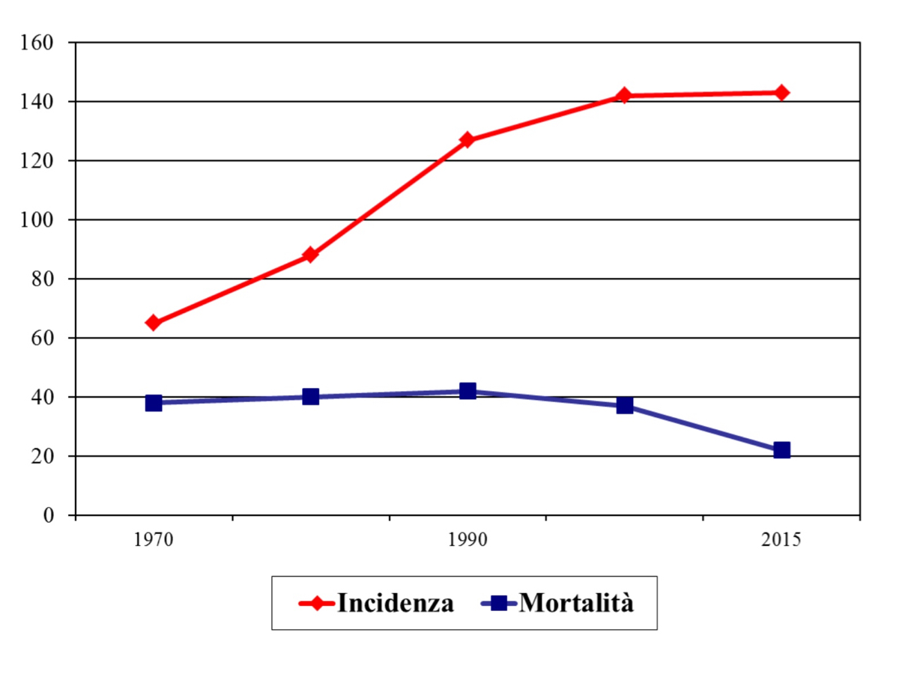

IL CANCRO IN CIFRE
Statistiche:
In Italia la sopravvivenza media a cinque anni dalla diagnosi di un tumore maligno è del 55 per cento fra gli uomini e del 62 per cento fra le donne.
La sopravvivenza è aumentata negli anni e inoltre, a livello individuale, migliora man mano che ci si allontana dal momento della diagnosi.
In Italia i valori di sopravvivenza sono sostanzialmente in linea con quelli dei Paesi nordeuropei, degli Stati Uniti e dell'Australia.
Mortalitá:
Il tumore al seno è la prima causa di mortalitá per tumore nelle donne, con un tasso di mortalitá del 17% di tutti i decessi per causa oncologica del sesso femminile.
